Research
Representative Work

CoStream: Composing Simple Behaviors for Generalizable Complex Manipulation
CoRL 2026
[project website] [arxiv] [code]
Complex manipulation composed from simple, independent behaviors: a semantic behavior that turns instructions into spatial constraints with an LLM and a VLM, a predictive behavior that extracts trajectories from a video world model, and a reactive behavior that applies high-rate tactile and force corrections. The behaviors share an SE(3) interface and compose into one pose command per control step, solving 8 real-world tasks, from CPU, GPU, and RAM assembly to everyday manipulation, without per-task demonstrations or retraining.
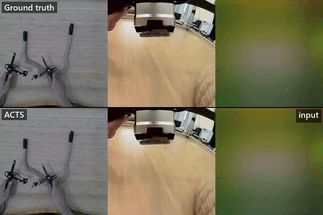
ACTS: Learning Visuo-Tactile World Models from Human Physical Interaction
arXiv preprint 2026
[project website] [arxiv]
A visuo-tactile world model trained only on human interaction data. Operators manipulate handheld GelSight sensors to collect React, a 4.9-hour bimanual dataset with scene, wrist, and tactile video, 6-DoF sensor motion, and tactile-derived normal force. ACTS jointly predicts future scene, wrist, and tactile frames; without fine-tuning, its predicted tactile imprints still appear and disappear with contact on robot teleoperation data.
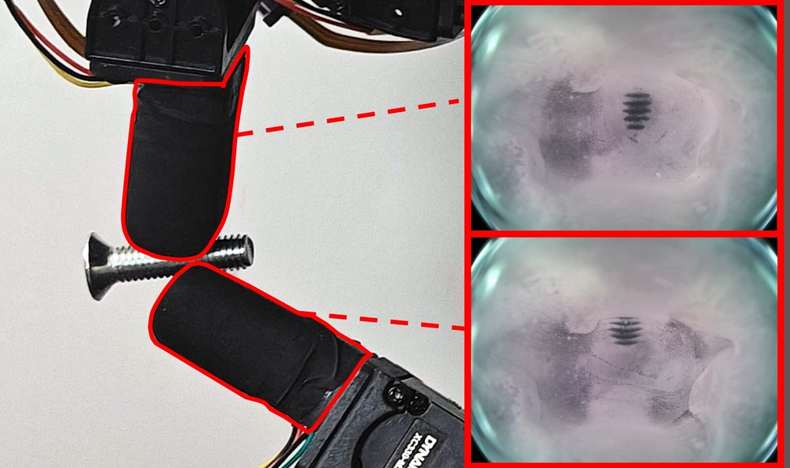
GlowTact: Simple and Compact Vision-Based Tactile Sensing with High Sensitivity and Spatial Resolution
arXiv preprint 2026
[project website] [arxiv]
Pressure closes an air gap between a black nitrile membrane and a clear gel, so contact turns dark in the camera image. The sensor needs only single-color light and a monochrome camera, with no photometric stereo, markers, or calibration. It picks up a 0.2 g screw resting under its own weight and resolves 0.25 mm-pitch M1 threads from a single frame, in flat, omnidirectional fingertip, and humanoid fingertip form factors.
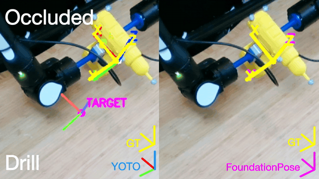
You Only Touch Once: 6-DoF Object Pose Estimation from Single Tactile Contact
arXiv preprint 2026
[arxiv]
YOTO recovers the full 6-DoF pose of an object from a single pair of simultaneous GelSight contacts, without contact history. A network pretrained on virtual tactile patches localizes each contact on the object surface, and a closed-form, normal-aware SVD solver returns the pose in one step. It works with CAD models or meshes from consumer mobile scans, and stays anchored to the object under occlusion, where vision-based FoundationPose drifts.

InvariantCloud: A Globally Invariant, Uniquely Indexed Point Cloud Framework for Robust 6-DoF Tactile Pose Tracking
ICRA 2026
A framework for 6-DoF tactile object pose estimation using vision-based tactile sensors, leveraging globally invariant surface marker arrangements for one-shot point cloud registration — achieving sub-2° yaw tracking error and addressing cumulative drift in z-axis rotation estimation.
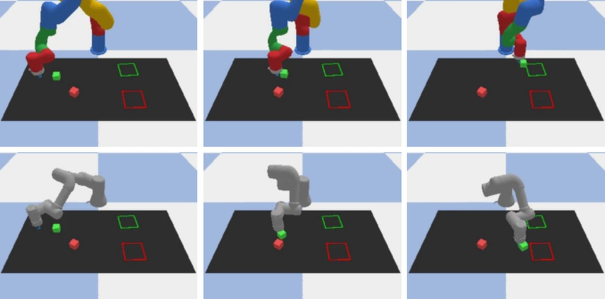
RichMap: A Reachability Map Balancing Precision, Efficiency, and Flexibility for Rich Robot Manipulation Tasks
WAFR 2026
A grid-based reachability map that comes close to compact forms such as RM4D while keeping the flexibility of a grid: over 98% prediction accuracy, 1–2% false positives, and about 15 μs per query in large batches. Workspace similarity between robots, measured with MMD, guides diffusion policy transfer and improves cross-embodiment block pushing by up to 26%.

Dynamic Regrasping with Asynchronous Vision Feedback using a Minimalist Robotic System
ICRA RoboLetics 2.0 Workshop 2025
A minimalist dynamic regrasping approach that throws an object into a ballistic trajectory and regrasps using computed-torque control, refined with asynchronous visual feedback — demonstrating successful mid-air regrasping without high-speed vision or complex hardware.
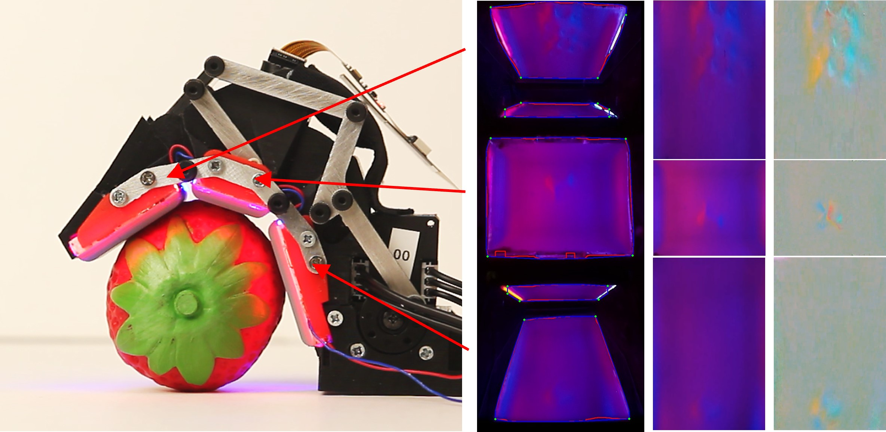
GelLink: A Compact Multi-phalanx Finger with Vision-based Tactile Sensing and Proprioception
ICRA 2024
GelLink has three phalanges and two DOFs, actuated by only one motor and visualized by only one camera. A compact mechanism with a mirror-based tactile sensing system achieves a versatile multi-phalanx design with embedded tactile sensing and accurate proprioception.
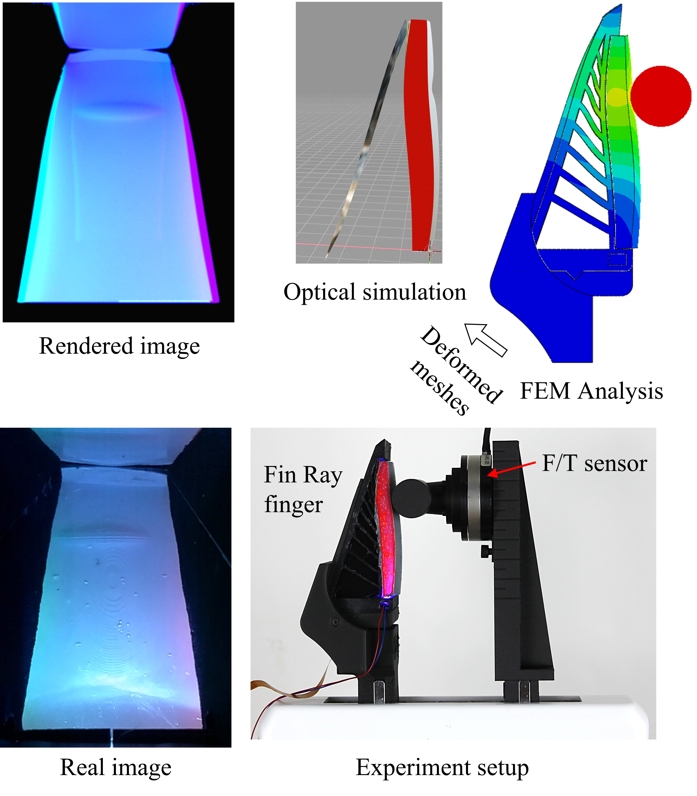
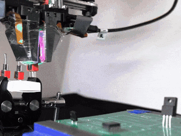
Transferable Tactile Transformers for Representation Learning Across Diverse Sensors and Tasks
CoRL 2024
[project website] [arxiv] [code]
A tactile representation learned from multi-sensors and multi-tasks, and a tactile dataset containing over 3M tactile images collected from 13 sensors and 11 tasks.
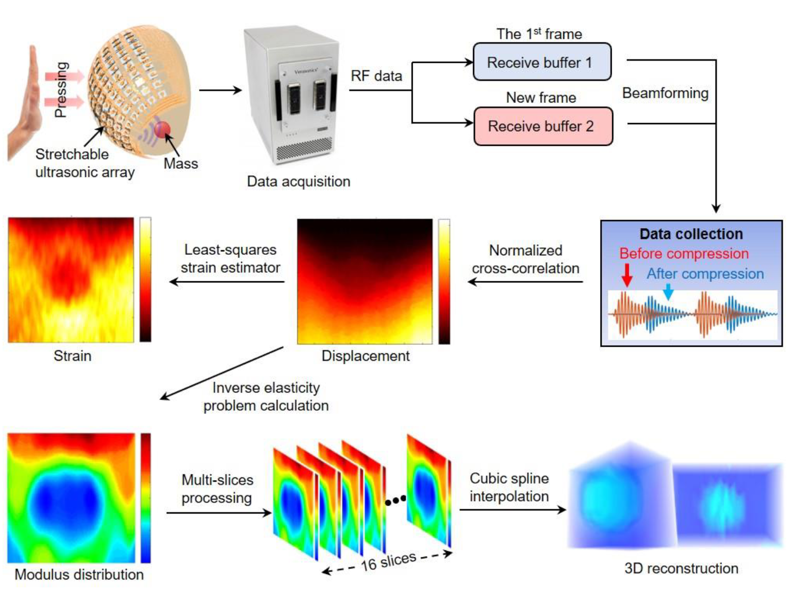
Stretchable ultrasonic arrays for the three-dimensional mapping of the modulus of deep tissue
Nature Biomedical Engineering 2023
[paper]
A stretchable ultrasonic array for serial non-invasive elastographic measurements of tissues up to 4 cm beneath the skin at 0.5 mm spatial resolution.
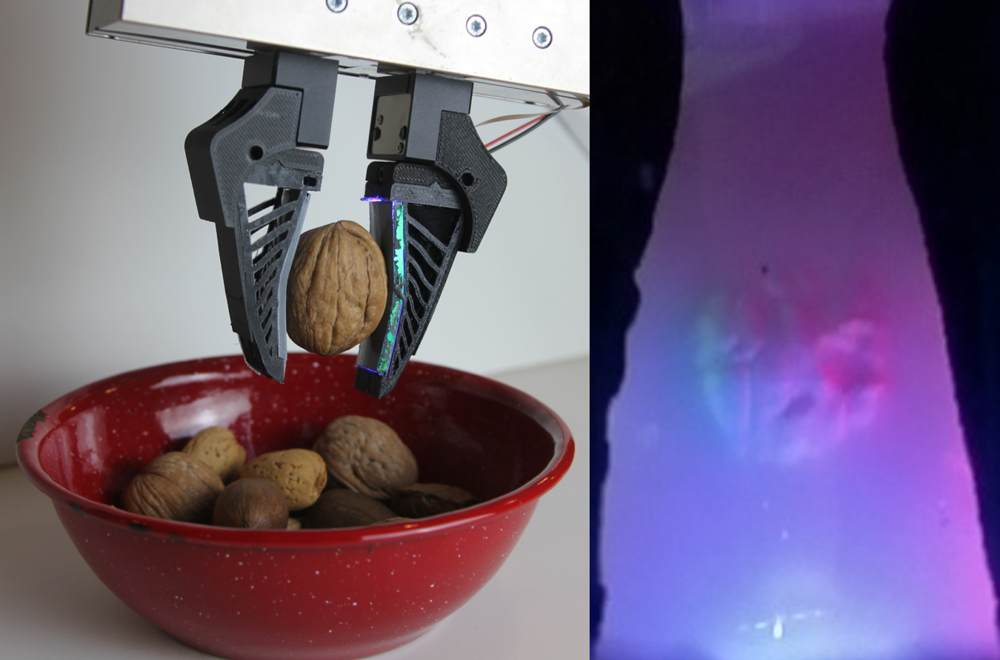
GelSight Baby Fin Ray: A Compact, Compliant, Flexible Finger with High-Resolution Tactile Sensing
RoboSoft 2023
Flexible mirrors and high-elongation silicone fluorescent paints incorporated into the GelSight Baby Fin Ray enable grasping through clutter and classification of in-shell nuts.
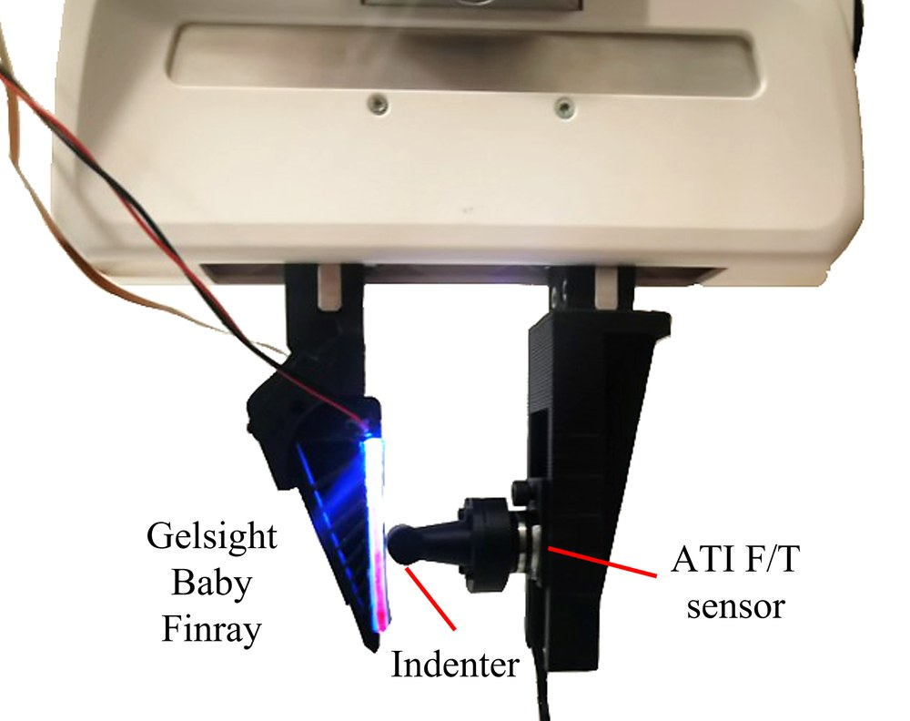
Object Recognition and Force Estimation with the GelSight Baby Fin Ray
CoRL 2023 Workshop on Learning for Soft Robots
[arxiv]
Learning on the Baby Fin Ray's tactile images to tell nut-in-shell textures apart and to estimate contact force and position, with ablations across ResNet50, GoogLeNet, and small CNNs.
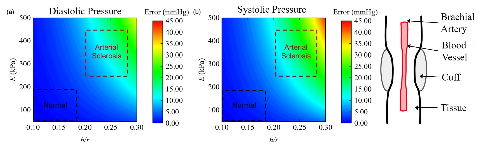
The effect of arterial stiffness on cuff-based blood pressure measurement
Extreme Mechanics Letters 2021
[paper]
A theoretical model studying the impact of arterial wall properties on non-invasive blood pressure measurement, revealing that arteriosclerotic patients' blood pressure may be overestimated.
All Publications
* equal contribution
2026
-
ACTS: Learning Visuo-Tactile World Models from Human Physical Interaction
-
Robot Learning with Visual Predicted Force
-
GlowTact: Simple and Compact Vision-Based Tactile Sensing with High Sensitivity and Spatial Resolution
-
A Brain-inspired Hierarchical Framework for Zero-Shot Robot Task Reasoning and Execution
-
RoboEdit: Turning Human Manipulation Videos into Scalable Robot Experience
-
You Only Touch Once: 6-DoF Object Pose Estimation from Single Tactile Contact
-
CoStream: Composing Simple Behaviors for Generalizable Complex Manipulation
-
InvariantCloud: A Globally Invariant, Uniquely Indexed Point Cloud Framework for Robust 6-DoF Tactile Pose Tracking
-
RichMap: A Reachability Map Balancing Precision, Efficiency, and Flexibility for Rich Robot Manipulation Tasks
2025
-
Dynamic Regrasping with Asynchronous Vision Feedback using a Minimalist Robotic System
2024
-
Transferable Tactile Transformers for Representation Learning Across Diverse Sensors and Tasks
-
GelLink: A Compact Multi-phalanx Finger with Vision-based Tactile Sensing and Proprioception
-
Scalable, Simulation-Guided Compliant Tactile Finger Design
2023
-
Object Recognition and Force Estimation with the GelSight Baby Fin Ray
-
GelSight Baby Fin Ray: A Compact, Compliant, Flexible Finger with High-Resolution Tactile Sensing
-
Stretchable ultrasonic arrays for the three-dimensional mapping of the modulus of deep tissue
-
A wearable cardiac ultrasound imager
2021
-
The effect of arterial stiffness on cuff-based blood pressure measurement